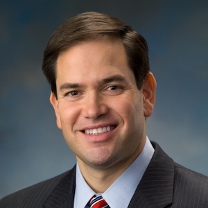

Marco Rubio

Republican
Florida Senator
-
Rubio on the Spectrum
Progressive
Neutral
Conservative
You on the Spectrum
Progressive
Neutral
Conservative
Rubio on the Issues
Edit
Abortion
- Abortion is complex issue; we must reduce the number of them. (Aug 2015)
- Barbarians of our age have murdered millions of the unborn. (Aug 2015)
- Consensus that life begins at conception; so no abortion. (May 2014)
- Expand birth control exemption for faith-based organizations. (Jun 2012)
Budget and Economy
- Raising the minimum wage is an economic disaster. (Nov 2015)
- Freeze spending for everything but defense at 2008 levels. (Apr 2015)
- Oppose Obama stimulus package; it's bad for America. (Mar 2010)
Civil Rights
- I oppose gay marriage, but it's the law of the land. (Apr 2015)
- Opposes Paycheck Fairness: don't require equal pay for women. (Apr 2014)
- Leave gay marriage to states, but keep DOMA. (Mar 2013)
- Voted NO on reauthorizing the Violence Against Women Act. (Feb 2013)
Drugs
- Medical marijuana could be OK, but not recreational use. (Aug 2015)
- Legalizing would be a mistake; reduce sentences carefully. (Apr 2015)
Education
- Common Core will convert from suggestions to mandate. (Aug 2015)
- Too many 4-year college grads; focus on vocational careers. (Apr 2015)
Environment
- Fix environment with free market, not government mandates. (Feb 2014)
- Voted NO on protecting ocean, coastal, and Great Lakes ecosystems. (May 2013)
Foreign Policy
- Putin trying to position Russia as a geopolitical force. (Sep 2015)
- Only America can stand up to world totalitarianism. (Mar 2014)
Gun Control
- Criminals will ignore gun laws because they're criminals. (Sep 2015)
- Has a concealed weapon permit, but does not carry a weapon. (Apr 2013)
Health Care
- All kids should get vaccinated, with medical exceptions. (Feb 2015)
- ObamaCare stifles entrepreneurship with regulation. (Jan 2015)
- Backed out of Race for the Cure over abortion funding fight. (Sep 2012)
Issue and candidate data gathered from the Bing Political Index and OnTheIssues.org.
©2016 Hannah Arnston, Nicholas Hall, Craig Herdle, and Sam Schlesinger